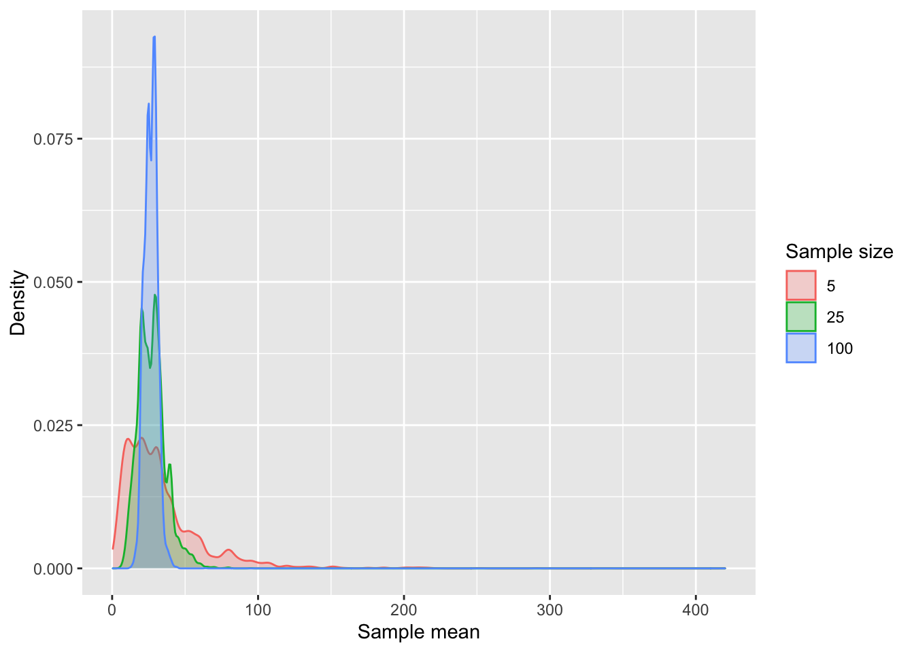
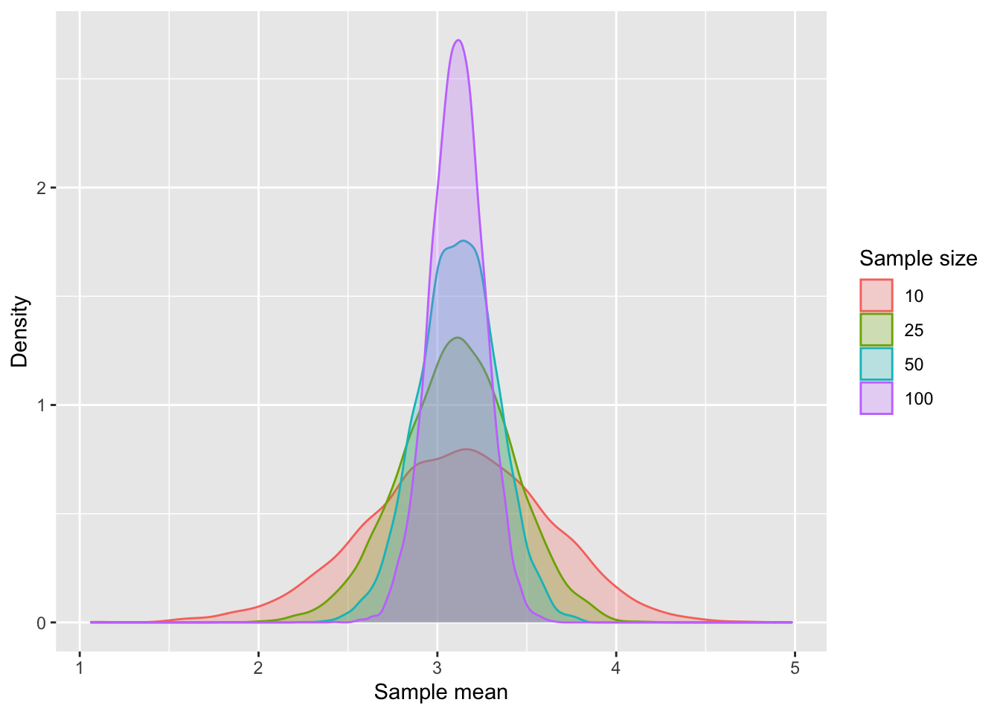
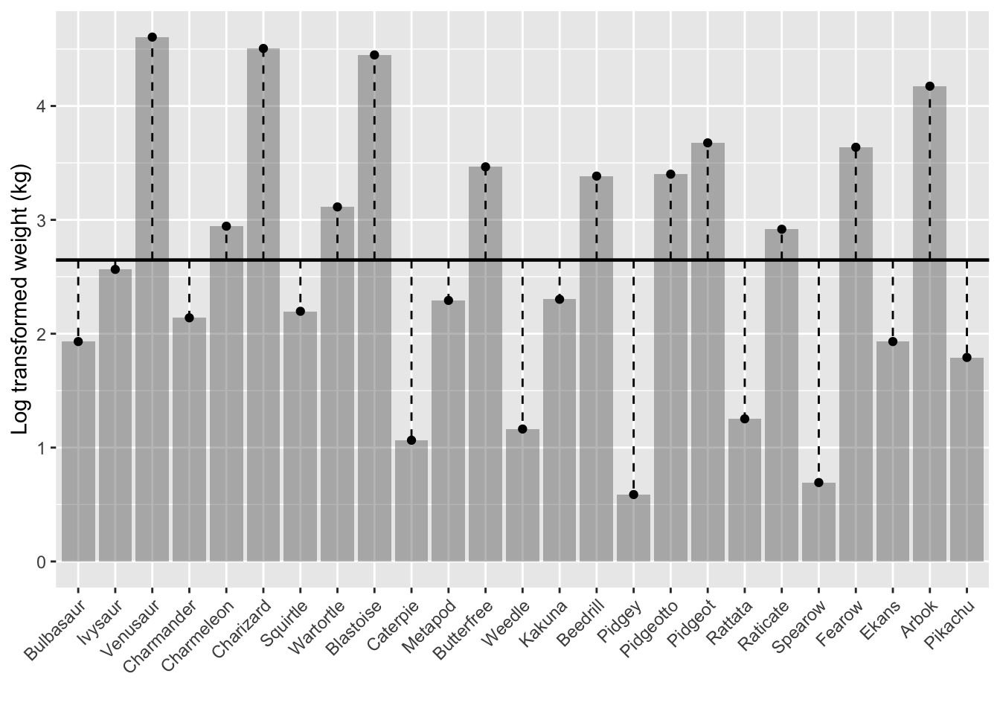

# Load packageslibrary(tidyverse)library(here)# Read in Pokémon datapokemon <-read_csv(here("data", "pokemon.csv"))# Create a subset with only the first 25 Pokémonpokemon25 <-filter(pokemon, pokedex <=25)pokemon25_50 <-filter(pokemon, pokedex >25& pokedex <=50)# Set optionsoptions(knitr.kable.NA ="-", digits =2)
In Part 1 of ‘Understanding Regression’ we figured out how to obtain the best estimate for describing the weights of the first 25 Pokémon. By using an error definition of summing squared residuals, we found that the mean of the data was the best estimate. In other words, our model ended up being:
weight = mean(weight)
Let’s plot the weights of the 25 Pokémon again, this time as a histogram, together with the mean.
`stat_bin()` using `bins = 30`. Pick better value with `binwidth`.
It is clear that while the estimate is the best estimate, it’s not a particularly great description of the data. Many of the weights are not exactly the mean of the different weights, or even close to it. In fact, there’s quite a spread. This brings us to describing that spread.
Variance
There are several ways to describe the spread of data. These include, but are not limited to, the variance, standard deviation, mean absolute deviation, and the median absolute deviation. There are interesting discussions about which measure to use in which situation (see for instance Gorard, 1993), but in this context we will focus on the variance. Why? Well, the definition of the variance is the sum of squared differences between each data point and the mean, divided by the sample size. Since we’ve been using the sum of squared residuals as our definition of error, there’s a nice conceptual fit in using the variance. The only difference between how we are calculating the error and the variance is that we divide by the sample size.
Dividing the sum of squared residuals by the sample size makes sense as a measure of spread. If we don’t divide by the sample size, then we can’t say much about the spread. Large values could be the result of a model with several very large errors or it could indicate a model with many small errors. To distinguish between these possibilities, we use a measure of spread that corrects for the sample size, by dividing by it.
We can calculate the variance of the 25 Pokémon weights using the var() function in R. This tells us that the variance is 847.31. However, if we calculate this manually by summing the squared deviations from the mean and dividing it by the sample size (25), we get 813.42. This is because there are two different versions of the variance: the population variance and the sample variance. So now we need to talk about what that means.
Population vs. Sample
Remember that our Pokémon weight model was based on the weights of the first 25 Pokémon. This is only a small sample of all Pokémon out there (the current total is 893). In the sample we observed, the average weight is 26.14. But what if we had instead focused on the next 25 Pokémon, from Raichu to Diglet? The average weight of these Pokémon is 20.68. That’s a difference of 5.46.
Let’s take a look at the weights of all 893 Pokemon.
This figure shows the weights of all the Pokemon that are out there, and thus forms the population of Pokemon weights. Previously we took a sample from this population by only looking at 25 Pokemon of this population.
The dashed line in the graph represents the mean of the population: 62.98. This is often denoted as \(\mu\). The variance of the population is 1.37^{4} and is usually denoted as \(\sigma^2\).
Sampling distribution of the mean
Imagine that we are not the only ones creating a Pokémon weight model. Instead, we are one of many who are doing so, and we all exchange our model information. We can tell others about our observation that weight = 26.144. In turn, others will give us their sample means. This enables us to plot the distribution of mean values.
In the following graph I plot the distribution of 10,000 such means. Each of these means is an average of 25 randomly selected Pokémon.
What if we base our mean on more than just 25 Pokémon? Or even fewer Pokémon? Below I plot what the distribution of means looks like at varying sample sizes.

Several things jump out. First, as the sample size increases, the distribution of means becomes more narrow. This is fairly easy to understand; more data means we are more likely to capture the range of weight values, giving us a better estimate of the overall mean. With small sample sizes, the mean is more dependent on exactly which weights were drawn from the larger population of weights. Second, we see that as the sample size increases, so does the average weight. There appears to be a bias. This bias is caused by the fact that the weights are not normally distributed. Weights are always a positive number (you can’t weight -6 kg, for instance). Since some Pokémon are very heavy (e.g., Cosmoem and Celesteela both weigh 999.9 kg), the distribution of weights is skewed towards larger weights. The heavy Pokémon have a significant impact on the average weight. Smaller samples are more likely to miss these heavy Pokémon, resulting a lower estimates.
The fact our data is non-normally distributed might actually be a reason to favor an alternative statistical technique to estimate the weight, such as the median. After all, the median is less sensitive to a few large values that skew the distribution. A downside of the median is that it is less efficient than the mean when estimating the center of a collection of values. Intuitively, this can be understood because the median simply ranks values and picks the middle option. It ignores a lot of information about the actual distance between the values, which also makes it so that it is less affected by a few large values. A downside is that this does mean we need more data points relative to methods that take into account more information, such as the mean.
We could fix this issue by log-transforming the weight values. Below I plot the same graph as before, but on log-transformed data. Log-transforming the weights makes large values less influential, and causes the distribution of weights to more closely resemble a normal distribution.

Now are means seem to behave appropriately.
Our next challenge is how to describe the uncertainty in the mean distributions. We see that when the average weight is based on a sample of 10 Pokémon, the distribution of means is wider than when the average weight is based on 100 Pokémon. But how much wider?
The width of the sample mean distribution is a function of two things: 1) the sample size, and 2) the distribution of the residuals. We already covered how the sample size is relevant, so let’s focus on the distribution of the residuals.
Let’s visualize the residuals of our weight = mean(weight) model, or, to be more accurate now, our weight_log = mean(weight_log) model.

The horizontal line represents the mean of the log-transformed weights. We see that it does not perfectly describe each data point, although we know this is the value that minimizes the sum of the squared residuals. We can now also see that the weights show us just how reliable the mean estimate is. If the Pokémon would have the same weights, the mean would better capture these weights, and the residuals would be smaller. If, and this appears to be the case, Pokémon vary wildly in terms of weight, the mean is often an incorrect description of a Pokémon’s weight, and as a result it is also more likely to vary from sample to sample. The mean is heavily influenced by exactly which Pokémon it has sampled from.
We can describe the variation in residuals using the very definition of the error we have maintained so far: the sum of squared residuals. However, this description ignores an important piece of information, which is the sample size. Large sums of squared residuals could be due to a few very large residuals or to many small residuals. To better capture the accuracy of the model, we should divide the sum of squared residuals by the sample size.
Actually, we should divide the sum of squared residuals by the sample size minus one. Why? Dividing by the sample size would give us a biased estimate of the variation in residuals. We must remember that we are estimating the variation of the residuals with regards to the mean, yet the mean is itself also an estimation. When we calculate the variation in residuals, this is done with respect to the observed mean in the sample, but this mean could also be a different mean, one that might even lie outside of the sample we have observed. As a result, relying on the observed mean produces an underestimation of the variation, because it will always be the mean of the sample, and thus lie somewhere between the minimum and maximum observed weight, while another mean could lie outside of the observed values, which would increase the variation in residuals.
But why divide by the sample size minus one? The underestimation is a function of the variation in sample means. The more variation there is between the different sample means, the more likely it is that any single sample consists of non-representative values. In contrast, if there is little variation in sample means, the underestimation must be smaller. The variation in sample means is actually the variation itself divided by the sample size, which we saw earlier. We saw that there is less variation in sample means when the samples are larger. This means that the amount of underestimation in variance is the variance divided by the sample size, or itself minus itself divided by the sample size. This is the same as saying sample size minus one divided by the sample size. Note that this is the bias we expect. To undo this bias, we then multiply by the sample size divided by the sample size minus one.
We now know how to calculate the variance of the residuals, as well as the variance in the sample means.
Code
lm(weight ~1, data = pokemon25) %>%summary()
Call:
lm(formula = weight ~ 1, data = pokemon25)
Residuals:
Min 1Q Median 3Q Max
-24.34 -19.24 -13.14 5.86 73.86
Coefficients:
Estimate Std. Error t value Pr(>|t|)
(Intercept) 26.14 5.82 4.49 0.00015 ***
---
Signif. codes: 0 '***' 0.001 '**' 0.01 '*' 0.05 '.' 0.1 ' ' 1
Residual standard error: 29 on 24 degrees of freedom
So, we know our estimate is 26.14 and we now also know that the standard error (of the mean) is the square root of the variance (847.31) divided by the sample size (25) = 5.82.
What do we see? We see a very skewed distribution that reveals several very heavy Pokemon and a majority of Pokemon that weigh between 0 (Ghost Pokemon don’t weigh much) and say… 100. I also plotted a dashed line that represents the average weight: 62.98. The variance